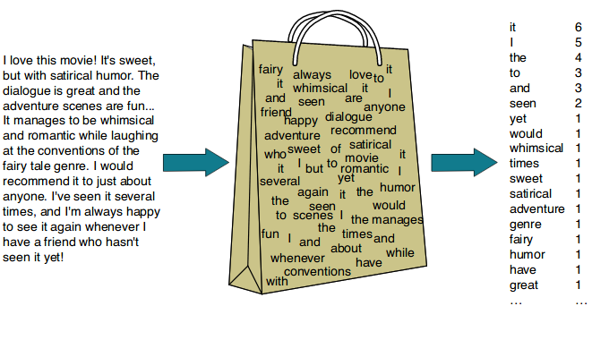

2.1.3 Extract Lemmatization from ORACC JSON: Basic Parser¶
The code in this notebook will parse ORACC JSON files to extract lemmatization data for one or more projects. The resulting csv (Comma Separated Values) file is named parsed.csv and has two fields: a Text ID (e.g. dcclt/Q000039) and a string of lemmas in the format lugal[king]N (or šarru[king]N for Akkadian texts).
The output of the Basic Parser contains only text IDs and lemmas. This format is useful for so-called bag of words techniques such as word clouds or topic modeling. The JSON files, however, contain a wealth of other data, including language (Sumerian, Akkadian, Emesal, etc.), orthographic form, morphology (currently only for Sumerian and Emesal), line numbers, breakage, etc. The extended JSON parser notebook (2.1.4), building upon the techniques demonstrated here, will show how to extract those data types.

Image source
Note
A “bag of words” is a simplified representation (or model) of a text that ignores word order, simply counting how often each lemma appears in a text.
The code for creating directories (jsonzip and output), and selecting and downloading the relevant ORACC projects is the same as in previous notebooks and is not commented upon.
2.1.3.0 Import Packages¶
pandas: data analysis and manipulation; dataframes
ipywidgets: user interface (enter project names)
zipfile: read data from a zipped file
json: read a json object
tqdm: progress bar
os: basic Operating System tasks (such as creating a directory)
sys: change system parameters
utils: compass-specific utilities (download files from ORACC, etc.)
import pandas as pd
import ipywidgets as widgets
import zipfile
import json
from tqdm.auto import tqdm
import os
import sys
util_dir = os.path.abspath('../utils')
sys.path.append(util_dir)
import utils
2.1.3.1 Preliminary: Create Directories, Download Projects¶
os.makedirs('jsonzip', exist_ok = True)
os.makedirs('output', exist_ok = True)
Input Project Names
projects = widgets.Textarea(
value="obmc",
placeholder='Type project names, separated by commas',
description='Projects:',
)
projects
project_list = utils.format_project_list(projects.value)
project_list = utils.oracc_download(project_list)
2.1.3.2 ORACC JSON: the CDL Structure¶
ORACC zip files contain JSON files for each individual text (exemplar or composite) that is part of that project. These files are found in the directory corpusjson and are named after the text ID (for instance P200931.json). The parse_text_json() function (2.1.3.3) extracts basic lemmatization data from each of those files. In the next section (2.1.4) we will review techniques to extract other types of information from these same files.
The structure of the JSON files for text editions is fairly complex, because of the hierarchical structure of textual data. A text may have one or more surfaces (obverse, reverse), each surface may have one or more columns; each column has lines; each line has words; and each word has signs.
text object
surface
column
line
word
sign
How many of those layers are present in a particular text is impossible to predict. Some tablets have columns, others do not; most surfaces have text, but not all surfaces do. In addition, a text consists of textual units, such as paragraphs, sentences, phrases and words, which form a separate hierarchy.
text
paragraph
sentence
phrase
word
These two hierarchies, which do not necessarily coincide, are simultaneously represented in the JSON tree. The object-oriented hierarchy is represented by d (Discontinuity) nodes, the discourse-oriented hierarchy is represented by c (Chunk) nodes.
The ORACC JSON tree for a text edition consists of a hierarchy of cdl keys. The name cdl is based on the three main components of the nested tree: Chunks (text units), Discontinuities (physical units), and Lemmas (words). A Chunk is a chunk of text of any length: the body of the text, a sentence, a phrase, a word, etc. A Discontinuity is the text object, the obverse or reverse, the beginning of a column, a break in the text, a horizontal ruling on the tablet, or the beginning of a new line. A Lemma is the lemmatization of a single word in the text, including the information on the sign level.
The value of a cdl key is a list of one or more dictionaries. Each of these dictionaries contains the key “node” which may have the values “c” (for Chunk), “d” (for Discontinuity), or “l” (for Lemma). Any “c” dictionary may contain a further cdl key, which again has as its value a list of dictionaries of the “c”, “d”, or “l” type. The “c” and “d” dictionaries always have a key type, which may have values such as text, discourse, or sentence (for “c” nodes) or object, obverse, column-start, line-start (for “d” nodes). Discontinuities (or “d” nodes”) may also have type : nonx, recording non-textual physical features such as rulings on the tablet, or missing lines. An “l” (Lemma) dictionary, is always at the bottom of the cdl hierarchy. The “l” dictionary itself contains an “f” key which has as its value a dictionary that contains all the lemmatization data of a single word (transliteration, citation form, guide word, part of speech, etc.). The “f” dictionary includes a “gdl” key (for Grapheme Description Language), which identifies the graphemes (cuneiform signs) of which the word is composed, with information on the reading and the function (syllabogram, logogram, determinative, etc.) of those graphemes.
Note
In some ORACC projects the gdl node will also include the actual glyphs of the cuneiform signs.
 CUSAS 12 3.1.06; Old Babylonian school text
CUSAS 12 3.1.06; Old Babylonian school text
The structure may be illustrated with the beginning of P251867, an Old Babylonian 3-line lentil (school text), edited in DCCLT (beginning of the file omitted):
{"cdl": [
{
"node": "c",
"type": "text",
"id": "P251867.U0",
"cdl": [
{
"node": "d",
"type": "object",
"ref": ""
},
{
"node": "d",
"subtype": "obverse",
"type": "obverse",
"ref": "P251867.o.1",
"label": "o"
},
{
"node": "c",
"type": "discourse",
"subtype": "body",
"id": "P251867.U1",
"cdl": [
{
"node": "c",
"type": "sentence",
"id": "P251867.U2",
"label": "o 1 - o 3",
"cdl": [
{
"node": "d",
"type": "line-start",
"ref": "P251867.2",
"n": "1",
"label": "o 1"
},
{
"node": "l",
"frag": "{ŋeš}ma₂-durah-abzu",
"id": "P251867.l1ac01",
"ref": "P251867.2.1",
"inst": "Madurahabzu[1]ON",
"sig": "@dcclt%sux:{ŋeš}ma₂-durah-abzu=Madurahabzu[1//1]ON'ON$Madurahabzu/{ŋeš}ma₂-durah-abzu#~",
"f": {
"lang": "sux",
"form": "{ŋeš}ma₂-durah-abzu",
"gdl": [
{
"det": "semantic",
"pos": "pre",
"seq": [
{
"v": "ŋeš",
"id": "P251867.2.1.0"
}
]
},
The first cdl key contains a list that has a single element, a dictionary (the ending square bracket of this list is not included in the snippet). This dictionary is a c node (Chunk) representing the entire text. The c node contains a new cdl key which has a list of dictionaries as its value including two d (Discontinuity) nodes (object and obverse) and another c node that represents a discourse unit, namely the body of the text (note that Chunk text and Chunk body are identical here - but that need not be the case). Eventually, there is a node l that contains the transliteration and lemmatization data for the first word of this text.
This hierarchy implies that a word (an “l” node) may belong to different hierarchies that do not necessarily align. For instance, a word may belong to a sentence (a Chunk) that continues from the obverse to the reverse (Discontinuities) of a tablet. The JSON structure allows to express (and to retrieve) those facts simultaneously. In the present section, however, we are only interested in the lemmatization data (in section 2.1.4 we will discuss how to extract information from c and d nodes).
In order to extract the lemmatization data we need to iterate through the hierarchy of cdl keys until we encounter an l node, containing an f key. The value of the f key is the data we want.
2.1.3.3 The parse_text_json() function¶
A straightforward way of extracting the lemmatization data out of an ORACC JSON file is by defining a recursive function, that is, a function that calls itself to recursively inspect the value of successive layers of cdl keys until one encounters an f key. The contents of the f key are then added to a list. In its most basic form that function looks like this:
def parse_text_json(text):
lemmas = []
for JSONobject in text["cdl"]:
if "cdl" in JSONobject:
lemmas.extend(parse_text_json(JSONobject))
if "f" in JSONobject:
lemmas.append(JSONobject["f"])
return lemmas
The function is called with the argument text, which contains the contents of the entire JSON file. The function adds a new dictionary of lemmatization data (one word at a time) each time it encounters an f key to the list lemmas.
The parse_text_json() we will use here adds one thing to the basic function discussed above. It will add the project name and text ID in the format cams/gkab/P338616 or dcclt/Q000039 to the lemmatization data of each word. If we parse data from multiple projects this additional field will allow us to trace back to the original data.
The parse_text_json() function thus takes two arguments: the JSON object that is being parsed (and that contains the information of one text as edited in ORACC) and a text identifier. The function returns a list of dictionaries (lemmas) where each element in the list represents the lemmatization data of one word.
def parse_text_json(text, id_text):
lemmas = []
for JSONobject in text["cdl"]:
if "cdl" in JSONobject:
lemmas.extend(parse_text_json(JSONobject, id_text))
if "f" in JSONobject:
lemm = JSONobject["f"]
lemm["id_text"] = id_text
lemmas.append(lemm)
return lemmas
2.1.3.4 Call the parse_text_json() function for every JSON file¶
The code in this cell consists of two loops: one going through the list of projects to be parsed, and one going through the list of texts included in each project. Each text is sent to the parse_text_json() function, which returns a list of lemmata. All these lists are concatenated into one list called lemm_l.
For each project the JSON zip file is located in the directory jsonzip, named PROJECT.zip. The zip file contains a directory that is called corpusjson that contains a JSON file for every text that is available in that corpus. The files are called after their text IDs in the pattern P######.json (or Q######.json or X######.json).
The function namelist() of the zipfile package is used to create a list of the names of all the files in the ZIP. From this list we select all the file names in the corpusjson directory with extension .json (this way we exclude the name of the directory itself).
Each of these files is read from the zip file and loaded with the command json.loads(), which transforms the string into a proper JSON object. This is the secondary loop.
This JSON object (essentially a Python dictionary), which is called data_json is now sent to the parse_text_json() function. The function returns a list of lemmata (each lemma represented by a dictionary). The extend() method is used to add this list to the list lemm_l, one document at the time. In the end, lemm_l will contain as many list elements as there are words in all the texts in the projects requested.
lemm_l = [] # initiate the list that will hold all the lemmatization data of all texts in all requested projects
for project in project_list:
file = f"jsonzip/{project.replace('/', '-')}.zip"
try:
zip_file = zipfile.ZipFile(file) # create a Zipfile object
except:
errors = sys.exc_info() # get error information
print(file), print(errors[0]), print(errors[1]) # and print it
continue
files = zip_file.namelist() # list of all the files in the ZIP
files = [name for name in files if "corpusjson" in name and name[-5:] == '.json']
for filename in tqdm(files, desc=project): #iterate over the file names
id_text = project + filename[-13:-5] # id_text is, for instance, blms/P414332
try:
text = zip_file.read(filename).decode('utf-8') #read and decode the json file of one particular text
data_json = json.loads(text) # make it into a json object (essentially a dictionary)
lemm_l.extend(parse_text_json(data_json, id_text)) # and send to the parsejson() function
except:
errors = sys.exc_info() # get error information
print(filename), print(errors[0]), print(errors[1]) # and print it
zip_file.close()
2.1.3.5 Data Structuring¶
The list lemm_l is transformed into a pandas dataframe (word_df) for further manipulation. The pandas function fillna('') fills gaps in the dataframe.
For various reasons not all JSON files will have all data types that potentially exist in an ORACC lemmatization. For instance, only Sumerian words have a base, so if your data set has no Sumerian, this column will not exist in the DataFrame.
word_df = pd.DataFrame(lemm_l).fillna('')
# replace NaN (Not a Number) with empty string
word_df
| lang | form | delim | gdl | cf | gw | sense | norm0 | pos | epos | base | morph | id_text | cont | norm | headform | contrefs | |
|---|---|---|---|---|---|---|---|---|---|---|---|---|---|---|---|---|---|
| 0 | sux | {iti}šu-numun-a-ka | [{'det': 'semantic', 'pos': 'pre', 'seq': [{'v... | Šunumuna | 1 | 1 | Šunumuna,ak.a | MN | MN | {iti}šu-numun-a | ~,ak.a | obmc/P230634 | |||||
| 1 | sux | šum₂-mu-dam | [{'v': 'šum₂', 'id': 'P230634.4.2.0', 'break':... | šum | give | to give | šum;ed.am | V/t | V/t | šum₂ | ~;ed.am | obmc/P230634 | -mu=m.u | ||||
| 2 | sux | n+2(aš) | [{'gg': 'ligature', 'gdl_type': 'ligature', 'g... | X | obmc/P230634 | ||||||||||||
| 3 | sux | še | [{'v': 'še', 'id': 'P230634.6.2.0'}] | še | barley | barley | še | N | N | še | ~ | obmc/P230634 | |||||
| 4 | sux | gur | [{'v': 'gur', 'id': 'P230634.6.3.0', 'break': ... | gur | unit | unit of capacity | gur | N | N | gur | ~ | obmc/P230634 | |||||
| ... | ... | ... | ... | ... | ... | ... | ... | ... | ... | ... | ... | ... | ... | ... | ... | ... | ... |
| 10525 | sux | x | [{'x': 'ellipsis', 'id': 'P230725.6.2.0', 'bre... | u | obmc/P230725 | ||||||||||||
| 10526 | sux | {m}lu₂-x | [{'det': 'semantic', 'pos': 'pre', 'seq': [{'v... | u | obmc/P230725 | ||||||||||||
| 10527 | sux | dam-a-ni | [{'v': 'dam', 'id': 'P230725.10.1.0', 'delim':... | dam | spouse | spouse | dam,ani | N | N | dam | ~,ani | obmc/P230725 | |||||
| 10528 | sux | in-na-x-x | [{'v': 'in', 'id': 'P230725.11.1.0', 'delim': ... | u | obmc/P230725 | ||||||||||||
| 10529 | sux | tukum-bi | [{'v': 'tukum', 'id': 'P230725.12.1.0', 'break... | tukumbi | if | if | tukumbi | CNJ | CNJ | tukum-bi | ~ | obmc/P230725 |
10530 rows × 17 columns
2.1.3.6 Remove Spaces and Commas from Guide Word and Sense¶
Spaces and commas in Guide Word and Sense may cause trouble in computational methods in tokenization, or when saved in Comma Separated Values format. All spaces and commas are replaced by hyphens and nothing (empty string), respectively. By default the replace() function in pandas will match the entire string (that is, “lugal” matches “lugal” but there is no match between “l” and “lugal”). In order to match partial strings the parameter regex must be set to True.
The replace() function takes a nested dictionary as argument. The top-level keys identify the columns on which the replace() function should operate (in this case ‘gw’ and ‘sense’). The value of each key is another dictionary with the search string as key and the replace string as value.
findreplace = {' ' : '-', ',' : ''}
word_df = word_df.replace({'gw' : findreplace, 'sense' : findreplace}, regex = True)
2.1.3.7 Create a lemma column¶
The DataFrame word_df includes all the fields that were present in the f keys of the JSON files we parsed, plus the extra fields (such as id_text) that we have added. It is not likely that we want to keep the DataFrame in this raw format. For many types of analysis one may need the lemma. A lemma, ORACC style, combines Citation Form, Guide Word and Part of Speech into a unique reference to one particular entry in a standard dictionary, as in lugal[king]N (Sumerian) or nadānu[give]V (Akkadian). Usually, not all words in a text are lemmatized, because a word may be (partly) broken and/or unknown. The code below will create a new field lemma that has the following form:
status |
lemma |
example |
|---|---|---|
lemmatized |
CF[GW]POS |
lugal[king]N |
unlemmatized |
Form[NA]NA |
i-ze₂-x[NA]NA |
number |
Form[]NU |
3(diš)[]NU |
Unlemmatized and unlemmatizable words will receive a place-holder lemmatization that consists of the transliteration of the word (instead of the Citation Form), with NA as GuideWord and NA as POS, as in i-bu-x[NA]NA. Numbers are not lemmatized, but do receive the POS ‘n’. In the lemma column they are represented by the transliterations plus []NU.
Note
Note that NA is a string and does not equal the missing value symbol NaN.
word_df["lemma"] = word_df["cf"] + '[' + word_df["gw"] + ']' + word_df["pos"]
word_df.loc[word_df["cf"] == "" , 'lemma'] = word_df['form'] + '[NA]NA'
word_df.loc[word_df["pos"] == "n", 'lemma'] = word_df['form'] + '[]NU'
word_df[['id_text', 'lemma']]
| id_text | lemma | |
|---|---|---|
| 0 | obmc/P230634 | Šunumuna[1]MN |
| 1 | obmc/P230634 | šum[give]V/t |
| 2 | obmc/P230634 | n+2(aš)[NA]NA |
| 3 | obmc/P230634 | še[barley]N |
| 4 | obmc/P230634 | gur[unit]N |
| ... | ... | ... |
| 10525 | obmc/P230725 | x[NA]NA |
| 10526 | obmc/P230725 | {m}lu₂-x[NA]NA |
| 10527 | obmc/P230725 | dam[spouse]N |
| 10528 | obmc/P230725 | in-na-x-x[NA]NA |
| 10529 | obmc/P230725 | tukumbi[if]CNJ |
10530 rows × 2 columns
2.1.3.8 Group by Textid¶
Get all the lemmas that belong to a single text in one row (one row = one document). The agg() (aggregate) function, which works on the result of a groupby() process, aggregates data of the original dataframe. The aggregate function takes a dictionary in which the keys are column names and the values are functions to be used in the aggregation process. The example below has only one such function (' '.join will join all entries in the colum lemma with a space in between); one may specify (the same or different) functions for different columns, for instance:
word_df = word_df.groupby("textid").agg({"lemma": ' '.join, "base": ' '.join})
The process will create a compound index. It is useful to flatten the index with a reset (reset_index()).
The result is a dataframe with two columns: id_text and lemma. The lemma column has a sequence of all the lemmas in that text (in the original order).
Note
This is just one example of how the output of the parse_text_json() may be structured in a pandas dataframe. How to structure the data depends on the research project.
doc_df = word_df.groupby("id_text").agg({"lemma": ' '.join})
doc_df = doc_df.reset_index()
doc_df
| id_text | lemma | |
|---|---|---|
| 0 | obmc/P200932 | 1[]NU saŋnita[man]N Antalu[1]PN mu[name]N arad... |
| 1 | obmc/P200933 | Aham-arši[1]PN 1[]NU saŋnita[man]N Antalu[1]PN... |
| 2 | obmc/P227962 | tum[bring]V/t x[NA]NA še[barley]N gur[unit]N š... |
| 3 | obmc/P227972 | us₂.a.DU[border]N x[NA]NA ašag[field]N Lu-Ešum... |
| 4 | obmc/P227988 | šu[hand]N teŋ[near]V/i Šunumuna[1]MN gur[turn]... |
| ... | ... | ... |
| 166 | obmc/X000007 | 1[]NU saŋnita[man]N Antalu[1]PN mu[name]N arad... |
| 167 | obmc/X000008 | 1[]NU saŋnita[man]N Iluni[1]PN mu[name]N ki[pl... |
| 168 | obmc/X000011 | ki[place]N Ilum-bani[1]PN Ilum-ide[1]PN šu[han... |
| 169 | obmc/X000012 | 15[]NU 1/2[]NU giŋ[unit]N kugbabbar[silver]N m... |
| 170 | obmc/X000013 | kišib[seal]N sar[write]V/t Urdun[1]PN damgar[m... |
171 rows × 2 columns
2.1.3.9 Save the Results¶
The code for saving the results (as csv file or as a pickle file is the same as that in section 2.1.2.
savefile = 'parsed.csv'
with open(f'output/{savefile}', 'w', encoding="utf-8") as w:
doc_df.to_csv(w, index=False)
pickled = "output/parsed.p"
doc_df.to_pickle(pickled)